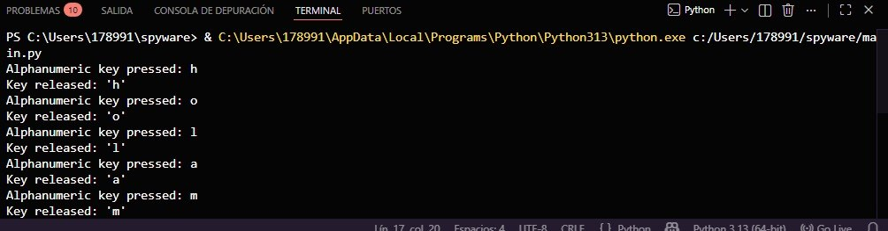

> Definición: Es un tipo de software malicioso diseñado para rastrear y espiar la actividad del usuario sin su consentimiento. El software espía monitorea la actividad en línea, aplicaciones en uso y comunicaciones locales.
> Keyloggers (Registradores de teclas): Es una subcategoría de spyware capaz de registrar cada tecla que se presiona en el teclado físico o virtual. Esto le permite al atacante capturar casi todos los datos introducidos por la víctima, incluyendo información personal confidencial, contraseñas, correos electrónicos y datos bancarios.
> Persistencia: Para lograr su objetivo, el software espía suele modificar la configuración de seguridad de los dispositivos, ocultando sus procesos en el sistema operativo para ejecutarse en segundo plano de forma silenciosa.
> NOTA DE SEGURIDAD: Por ética profesional y para prevenir el uso indebido, los fragmentos de código presentados a continuación han sido censurados y abstraídos. Solo se expone la lógica de funcionamiento con fines estrictamente académicos.
> Librería utilizada: Para este ejercicio en Python, se utilizó la librería pynput, la cual sirve para controlar y monitorear dispositivos de entrada (teclado y mouse) de manera programática.
> Instalación: Se requiere instalar el paquete mediante el gestor de dependencias de Python ejecutando pip install pynput en la terminal de Windows.
> Funcionamiento: El programa funciona creando un "Listener" (oyente) que se engancha a los eventos del sistema operativo. Cada vez que el SO detecta una pulsación de tecla, el script la intercepta antes de enviarla a la aplicación destino.
> Registro Local: En lugar de enviar los datos por internet (fase omitida), el script almacena cada pulsación en un archivo de texto local llamado logUPSLP.txt.
> Prueba de Concepto (PoC): Al ejecutar el archivo en la terminal, el script comenzó a interceptar las pulsaciones del teclado. Como se observa en la evidencia.
> Se introdujeron las teclas correspondientes a la palabra "hola mundo", capturando exitosamente tanto el evento de presión (press) como el de liberación (release) de cada carácter.

A pesar de su diseño sigiloso, los keyloggers como el desarrollado en este laboratorio pueden ser identificados y neutralizados mediante controles de seguridad adecuados: